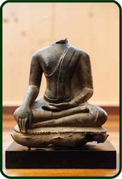

|  |
||
Esitleda nime LIVE ZEN siin internetis ja Eestis võib tunduda ebatavalisena - enamasti teatakse, et Zen on Jaapani kultuurist pärinev kõrgelt arenenud religioosne fenomen, mis paistab silma oma selge esteetilise suhtumisega igapäevaellu ja ümbritsevasse, kuid sageli on jäänud selle tegelik tähendus hoomamata või kaugeks. Kuid lugege, mida on öeldud juba ligi 700 aastat tagasi: Zen ei selgita eriarvamuslikke mõisteid, vaid heidab kõrvale eelarvamused ja kujutlused, pühakirjad ja kõik muu. Tungib läbi kattekihtide, jõuab sinu sisemise lätteni. Kõik pühad on pööranud pilgu iseenda sisse ja ei kahtle enam. Pööra pilk sissepoole - kogu aeg ja igas olukorras, ainult nii jõuad kiht-kihi järel, ikka sügavamale ja sügavamale kohta, mida võimatu kirjeldada sõnus. Lakkab mõtlemine ja kaob vahetegemine, väärad arusaamad ning mõtted need hääbuvad enesest, ilma neid välja kiskumatagi, ja tõelised ajed ja teod saavad kerkida pinnale, ilma neid otsimatagi. Alles siis saad sa teadma oma südame tõde. Daikaku, 13. saj (tõlge raamatust Osho “The Buddha: The Emptiness of the Heart”) Zen ei põhine ühelgi ususüsteemil ega dogmal, see pole religioon, vaid pigem taasühinemine elu pühasusega. Sellel pole mitte mingit huvi minevikukogemuste vastu, selle ainus siht ja suund on vaikuse ja hinnangutevaba kohalolu poole. Peamine on teadlikkus hetkest ehk nüüd ja praegu. Sest pole midagi vaja saavutada, mida iganes me otsime, on olemas meis enestes - üksnes kaetuna paljude sotsiaalsete tingimuslikkuse kihtidega. |
||
| Osho Activities Lecture Contacts |